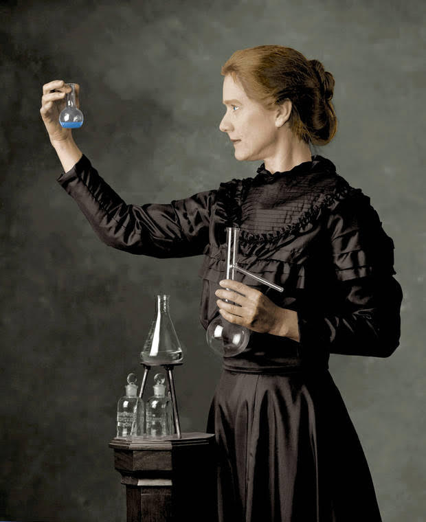

Marie Curie
1867 – 1934

- My Early Life & Achievements
- I was a Polish-born French scientist.
- I deeply believe in the importance of a good education.
- I am most famous for my work on radioactivity.
- I discovered two radioactive elements: Radium and Polonium.
- I am the first woman to have ever won a Nobel Prize.
- I am the only person to date to have won it twice in two different disciplines of science.
- My Contributions
- I coined the term Radioactivity.
- I discovered that the uranium rays were coming from within its nucleus.
- I invented mobile radiology units during World War I.
- My efforts resulted in the use of X-Rays for medical purposes.
- My work on radioactivity is used for possible treatments of cancer.
- I founded the Curie Institute.
- I was the first woman to become a professor at the University of Paris.
- My Challenges
- I was born in poverty.
- In my time, women were not offered opportunities for higher education.
- I attended a secret "Floating University" that changed its local frequently to avoid detection by Russians.
- I had to break the glass ceiling to have my name recommended for Nobel Prize.
- I suffered from leukemia and several health issues due to exposure to radioactivity.
- My Thoughts on Life
- Nothing in life is to be feared, it is only to be understood.
- Be less curious about people and more curious about ideas.
- I was taught that the way of progress was neither swift nor easy.
- First Principle: Never to let one's self be beaten down by person or by events.